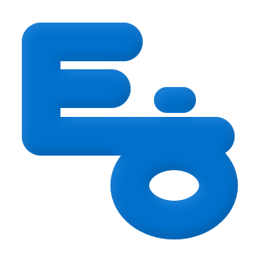

김태훈풀스택 개발자
React Native와 Spring Boot로 앱·웹과 서버를 함께 개발합니다.
동네 농구 커뮤니티 앱 넉터를 직접 개발해 2026-08-19에 출시했고, 가입 회원은 485명입니다.
기술은 비용과 성능을 비교해 선택하고, 장애와 결정 과정은 문서로 남깁니다.
넉터
2026.08 - NOW
개발 3명, 앱·웹·서버·운영
2026.08 - NOW
농구 동호회 운영진이 게스트 모집, 친선전 섭외, 체육관 대관을 단톡방과 전화로 조율하던 문제를 다룹니다. App Store, Google Play, 웹(app.nuktu.com)에 출시해 운영 중입니다. 앱·웹 커밋의 87.5%, 서버 커밋의 72.8%를 작성했습니다.
앱·웹과 서버 개발
매칭, 대관, 클럽, 커뮤니티, 채팅 기능을 앱·웹 화면과 서버 API로 구현했습니다. 화면 58개를 iOS, Android, 웹에 같은 코드로 배포합니다.
React Native 0.86(Expo SDK 57), TypeScript, Zustand, Java 17, Spring Boot 3.2, PostgreSQL 17, Redis 7.4, Flyway, STOMP WebSocket, FCM
앱·웹
- 화면 58개를 iOS, Android, 웹에 동시 배포하고 EAS Update로 스토어 심사 없는 OTA 배포를 적용했습니다.
- 3Mbps 이하 회선에서 웹 첫 화면이 90초 넘게 스플래시 상태로 유지되던 문제를 글꼴 woff2 부분 집합과 화면별 코드 분할로 해결했습니다. 첫 화면 전송량은 9,384KB → 2,360KB입니다.
서버
- 매칭 큐, 모집글, 클럽, 대관, 채팅, 푸시 알림 API를 구현하고 스키마를 Flyway 마이그레이션 V0~V190으로 관리했습니다.
- 큐 매칭의 N+1 조회와 요청 스레드 계산을 분리했습니다. 요청당 SQL은 1,259개 → 25개, 응답은 6.30초 → 0.51초입니다.
제휴 체육관 파트너 앱·웹
- 대관 예약, 입금 확인, 기기별 푸시를 구현했습니다(커밋 97.9%).
- 체육관이 엑셀 표 사진으로 관리하던 장기 대관을 사진 업로드로 주간 일정에 등록하도록 만들었습니다. 인식 모델 11개를 비교해 17/17 정확한 모델 중 최저가(장당 $0.0144)를 선택했습니다.
팀 문서 협업 자동화
팀원이 서버, 앱, 마케팅 문서를 저장소마다 찾아야 했습니다. 저장소 4곳의 문서를 docs.nuktu.com 1곳으로 모으고 빌드, 배포, 검사를 자동화했습니다.
VitePress, GitHub Actions, Cloudflare Access, Python
- main 반영, 코드 저장소의 문서 변경 알림, 매시 예약 실행으로 빌드하고 서버가 300초마다 최신 빌드를 설치합니다.
- PR마다 링크·앵커·병합 충돌과 스타일 규칙 5종을 검사합니다.
- 저장소 6곳의 AGENTS.md에 문서 형식을 정해 팀원과 AI 에이전트가 같은 형식으로 작성합니다. 팀원 문서 커밋은 77건입니다.
- 장애 기록 82건과 기술 선택 기록 56건을 작성했습니다.
운영 장애 대응
운영 중 장애는 원인, 검토한 대안, 해결, 전후 수치 순서로 기록했습니다.
Mac mini blue/green 배포, PostgreSQL 스트리밍 복제, Cloudflare Workers, 자체 CI 러너 4대
- 스탠바이 서버가 읽기 전용 복제본에서 기동 백필의
SELECT ... FOR UPDATE로 재시작을 2,973회 반복했습니다. 쓰기 가능 여부를 확인하도록 바꿔 재시작 0회, 기동 17.1초로 복구했습니다.
- 웹 API를 같은 도메인 Worker 경유로 바꿔 CORS 사전 요청을 없앴습니다. 로그인 요청 중앙값은 276ms → 139ms입니다.
- 커뮤니티 글 조회 수 중복을 회원당 1회 집계로 고쳤습니다. 이 수정의
clearAutomatically로 생긴 글 상세 500은 조회 순서 변경과 통합 테스트로 해결했습니다.
- 다른 기기에서 로그인하면 세션이 덮어써지던 문제를 기기 세션 단위 저장 키와 Redis AOF 적용으로 해결했습니다.
기술 선택
후보가 2개 이상이면 비용과 성능을 비교하고 선택 이유를 기록했습니다.
- 사용자 글 자동 번역은 Papago(최소 월 2만 원), Google 번역과 비교해 기존 키를 재사용하는 Gemini(월 $1 미만 추정)를 선택했습니다.
- 길찾기 API 5개를 요금과 약관으로 비교해 TMAP 단일 사용(월 약 7,000원)을 추천안으로 정했습니다. 대안 조합은 최대 약 20만 원입니다.
- 앱 OTA는 자체 호스팅 서버 대신 EAS Update Free(월 $0, MAU 1,000명)를 선택했습니다.
에게(에너지게이트)
2026.11.19 - 2026.11.21
PNU × AWS Maestro AI 해커톤, 4명
최우수상
출제 기업의 과제는 "건물 운영자가 공간과 설비 상태를 직관적으로 파악하기 어렵다"였습니다. 3일 동안 도면 기반 3D 트윈과 AI 운영 도우미를 운영 사이트까지 배포했습니다. Frontend 커밋의 77.9%, Lambda 커밋의 66.7%를 작성했습니다.
문제 정의 검증
구현 전에 운영자 문제 자료 155건을 검토해 99건을 수록했습니다. 핵심 문장 35건은 원문과 대조했습니다.
- 운영자는 BMS보다 재실자 민원으로 문제를 파악했습니다. 온도가 최대 민원이라는 시설관리자 응답은 68%입니다.
- 3D 화면과 자연어 질의를 직접 요구한 조사는 없었습니다. 2D 평면 보기를 요구사항 검토 항목에 넣고 검증 지표를 민원 호실 확인 시간과 빈 공간 운전 탐지량으로 정했습니다.
사용 대상과 기업 도입 구조
- 하루 종일 화면을 보는 40~50대 운영자를 기준으로 본문 16px, 상태 2중 표시, AI 답변 3문장(결론, 근거, 조치)을 적용했습니다.
- 판매사가 기업과 건물을 등록하고 고객사 운영자가 기업 코드로 가입하는 구조를 만들었습니다. 대기업 보안 요구 기준으로 보완 8항목을 정리했습니다.
서버리스 API와 AI
React 19, TypeScript, three.js, AWS Lambda(Python 3.12), API Gateway, DynamoDB, Amazon Bedrock(Claude Sonnet 5.5), S3 Vectors, SageMaker, YOLO11s
- 규정 문서 검색 저장소는 S3 Vectors(월 1센트 미만)를 OpenSearch Serverless(최소 월 214달러), Aurora pgvector(최소 월 73달러)와 비교해 선택했습니다.
- Bedrock 구조화 응답으로 3문장 초과 답변을 3~12건 → 0건으로 줄이고 평가 정답 35/35를 유지했습니다.
- 도면 실내기 인식 모델(YOLO11s)을 v1~v9로 개선해 처음 보는 건물 6동 평균 재현율을 0.339 → 0.758로 올렸습니다.
버스트래커(BBB)
2024.03 - 2025.11
캡스톤디자인, 5명(2024)·3명(2025)
은상
학생은 통학버스 지연과 정류장 변경을 미리 확인하기 어려웠습니다. 2024년 학교 건물 단말기 방식으로 시작해 2025년 운전자 앱 GPS 방식으로 전환했고 CoShow 2025에 전시했습니다.
서버와 승객 앱
Java 21, Spring Boot 3.3, MongoDB, WebSocket, OAuth2, JWT, React Native 0.78, Docker, GitHub Actions
- Google OAuth2·JWT 인증과 학교 이메일 인증 후 권한 승급을 구현했습니다. 실패 응답에도 200을 반환하는 외부 API는 응답 본문의
success 값으로 판정하도록 고쳤습니다.
- 버스 위치 미저장 원인 3개(
@Transactional 내부 호출, 스케줄링 누락, 컬렉션 이름)를 찾아 버스별 최신값 5초 배치 저장으로 바꿨습니다.
- React Native 승객 앱 전체와 자동 탑승 감지 서버 로직(50m 이내 2회 연속 탑승, 100m 초과 2회 연속 하차)을 구현했습니다.
- 이벤트 발행만 있고 리스너가 없어 2개월간 승객 앱에 버스 상태가 전달되지 않던 결함을 수정했습니다.
Open Source
직접 만들어 공개한 도구입니다.
devdog2026.09 - NOW
한국어 기술 문서·커밋·주석 문체를 작성 규칙, 검사기, 훅으로 맞추는 Claude Code 플러그인
devdog-docs
넉터 문서 자동화를 일반화한 문서 구조·검사·위키 사이트 플러그인
- 여러 저장소 문서를 사이트 1곳으로 모으고 재빌드 알림 워크플로 설치
Experience
학력, 교육, 수상, 자격증입니다.
학력
- 부산대학교 정보컴퓨터공학부 컴퓨터공학과 학사 편입2026.03 - 2028.02 예정
- 울산과학대학교 컴퓨터IT학부 전문학사, 수석 졸업(GPA 4.5/4.5)2023.03 - 2026.02
교육
- 부산대학교 AI 분야 첨단산업 인재양성 부트캠프 1기2026.06 - 2026.08
- UIPA 보안솔루션 소프트웨어 개발 과정 80시간2024.07 - 2024.08
자격증
- SQLD한국데이터산업진흥원
- ADsP한국데이터산업진흥원
- ISTQB CTFLFoundation Level
수상
- PNU × AWS Maestro AI 해커톤 최우수상(에게)2026.11
- 클라우드 AI PBL 최우수상(부산대 AI융합교육원장)2026.07
- COSS 아이디어·성과 경진대회 차세대통신단장상2025.11
- International CanSat Competition 2025 32위2025.06
- 소프트웨어개발 캡스톤디자인 은상(버스트래커)2024.11
- 캡스톤디자인 경진대회 은상, 일반 부문2024.11
- AI TechDay 해커톤 우수상2024.11
- 창업창직 경진대회 우수상2024.10
- 디지텍 캡스톤디자인 경진대회 디지텍상